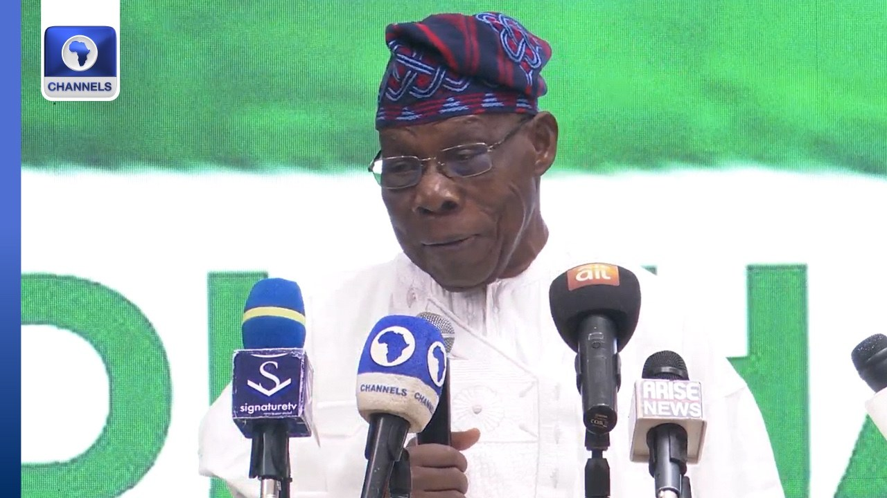

Debt Worse Than Leprosy, Destroys Generations, Says Obasanjo

Former President Olusegun Obasanjo has criticised President Bola Tinubu’s defence of government borrowing, saying debt can damage the prospects of future generations. Speaking at a symposium in Abeokuta, Ogun State, he described debt as worse than leprosy and called the view that borrowing is acceptable if loans can be repaid “absolute nonsense.” The forum focused on using artificial intelligence to address grassroots problems and accelerate national development.
Obasanjo also challenged Nigeria’s economic record, recalling that when he established his farm 47 years ago, one naira exchanged for $1.85. He asked the country’s leaders to account for the naira’s depreciation to about ₦1,500 to the dollar and questioned what had been achieved over the intervening decades.
Historian and public policy scholar Umar Ardo, the symposium’s guest speaker, warned that artificial intelligence could increase Africa’s reliance on foreign powers. He said the continent risked having the technology used to manage it rather than help it shape its future unless it invested in chip fabrication, data centres and African-owned datasets, and strengthened cooperation across the continent.
Tinubu has defended plans for further foreign borrowing, arguing that long-term infrastructure investment is needed to support his administration’s ambition of making Nigeria a $1 trillion economy by 2030. He said the proposed loans would fund roads, electricity improvements, port upgrades and other projects intended to create jobs and support businesses. Projects he listed included the Lagos-Calabar Coastal Highway, the Sokoto-Badagry and Trans-Sahara superhighways, improvements to the electricity grid and upgrades to major commercial ports in Lagos.
The President projected that the Lagos-Calabar highway could cut transport costs along its route by 15 to 20 per cent and add up to two per cent to GDP through increased trade, tourism and industrial activity. He estimated it could generate about 100,000 direct construction and engineering jobs and more than 150,000 indirect jobs. The Nigeria Labour Congress has questioned the government’s request for parliamentary approval to borrow $20.5 billion and €1.45 billion, given claims that revenue has risen since the petrol subsidy was removed.
Source: Channels TV